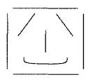

III
ZİHNÎN ÖZÜ:
Bilinç ve Yapısı
Yüzeysel olarak, bilincin herhangi bir görüngünün en iyi anlaşılanı olduğu sanılabilir. Ne de olsa, gerek uyanıkken gerek rüya görürken, bütün hayatımız boyunca kendi bilincimizle doğrudan temas halinde değil miyiz? Kendi bilinçli deneyimlerimizin bir betimlemesini vermekten daha kolay ne olabilirdi ki? Ancak, bunun o kadar kolay olmadığı ortaya çıkmıştır. Bilincinizi betimlemeye çalıştığınızda, büyük kısmı itibarıyla yaptığınız şeyin yakın çevrenizdeki nesnelerin ve olayların betimlemesini yapmak olduğunu fark edersiniz. Deruni bedensel duyumsamalarınızı, haletiruhiyenizi, duygularınızı ve düşüncelerinizi betimledikten sonra, kendi bilincinizin içeriğini bilinçli olarak algıladığınız şeyleri betimlemek suretiyle betimlersiniz. Odanın etrafına şöyle bir göz gezdirip sandalyeleri ve masaları gördüğünüzde, gördüğünüz sandalyeler, masalar ve bunların üzerinizde bıraktığı izlenimler dışında kendi bilincinizi betimlemek suretiyle betimleyeceğiniz hiç bir şey yoktur. Şu anda mevcut olmayan nesneler ya da geçmişte olan olaylar hakkındaki bilinçli düşüncelerinizi betimliyor olsanız dahi, bu bilinç durumlarınız hakkında söylemek durumunda kalacağınız şeylerin çoğu, yine bu mevcut olmayan nesneler ve geçmiş olaylar hakkında olacaktır. Bilincin bir betimlemesini elde etmekte yaşanılan zorluğun bir kısmı, bilincin kendisinin, etrafınızdaki masa ve sandalye türünden şeylerin gözlem nesneleri oldukları şekilde bir gözlem nesnesiymiş gibi görünmemesinde yatar.
Bilincin bir açıklamasını elde etmekte yaşanılan ilk zorluk, bilinçle gözlem arasında bulunan özel ilişkiden kaynaklanır. Biz bilinci dağları ve okyanusları gözlemleyebileceğimiz şekilde gözlemleyemeyiz; çünkü bu durumda gözlemlenmeye aday tek şey, bilincin kendi kendisini gözlemleme eylemidir. Bilincin kendisi söz konusu olduğunda, diğer gözlem hedeflerinde olduğu gibi gözlemle gözlemlenen şey arasında bir ayrım yapamayız. İlerde göreceğimiz üzere, bu nokta iç gözlem doktrini açısından önemli sonuçlar taşır.
İkinci bir zorluk ise, bilinci içinde yaşadığımız olağan, doğal, ‘fiziksel’ dünyanın bir parçası olarak ele almayı reddeden uzun bir felsefi, geleneği devralmış olmamızdır. Bilinç, olağan fiziksel dünyanın bir parçası olarak değil de, gizemli bir şey, dünyanın kenarında kalmış ya da onun üzerinde bir şey olarak, doğanın geri kalanından ayrı bir şey olarak ele alınır. Bir tarafta; bilinci metafizik bir biçimde ayrı, fiziksel olmayan bir görüngü olarak ele alan düalistler vardır. Diğer taraftan gerçek ve indirgenemez bir görüngü olarak bilincin varlığını reddeden ve aslında üçüncü şahıs bağlamında betimlenen ‘maddî’ ya da ‘fiziksel' süreçleri aşan ve bu süreçlerin üzerinde bilinç diye bir şeyin olmadığını ileri süren materyalistler vardır, ikinci bölümde de açıkladığım üzere, benim durduğum yer ikisi de değildir. Bilincin indirgenemezliği konusundaki ısrarım. durduğum yeri özel bir düalizm gibi gösterebilse de, aynı anda yapmış olduğum ve bilincin sindirim ya da fotosentez gibi sıradan biyolojik bir görüngü olduğu şeklindeki ısrarım, durduğum yeri materyalizme benziyor gibi gösterecektir. Yorumcularımın bazıları tarafından bir materyalist olarak, diğerleri tarafından ise bir düalist olarak nitelendirilmem belki de hiç şaşırtıcı değildir, felsefede sıkça karşılaşılan bir örnek olan mevcut durumlar arasındaki bu çatışmadan çıkış yolu ise, kavramsal bir gözden geçirme faaliyetine girişmektir. Problem, olgulara erişimimizle alakalı değildir. Problem, olguları betimlemek için devraldığımız belli kategorilerle alakalıdır. Bir yanda, hem ‘fiziksel dünya’nın bilgisini teşkil eden bilimsel bir bilgi modeline sahibiz, hem de bunun yanında bilincin fiziksel dünyanın bir parçası olmadığını söyleyen felsefî bir geleneği devralmış durumdayız. İkinci bölümde gördüğümüz üzere, bundan çıkış yolu belli kategorileri, özellikle de "zihinsel’ ve "fiziksel’ terimlerinin birbirlerini karşılıklı olarak dışlayan sınıfları adlandırdıkları şeklindeki anlayışı terk etmek zorundayız. Bir kez bilincin de diğerleri gibi biyolojik bir görüngü olduğunu anladıktan sonra, elbette, bir anlamda, bilincin tamamıyla ‘maddî’ olduğunu görebiliriz. Bilinç bizim biyolojimizin parçasıdır. Diğer yanda ise bilinç, münhasıran üçüncü şahıs fiziksel terimleriyle betimlenebilir fiziksel görüngülerden oluşan herhangi bir sürece indirgenebilir de değildir. Bu durumda da materyalizmi reddetmeliymişiz gibi görünüyor. Çözüm, açıkça meydanda olan olgulardan hiçbirini reddetmeden, bilincin bir ve aynı anda tamamıyla hem maddî hem de indirgenemez bir biçimde zihinsel olduğunu kabul edecek şekilde kategorilerimizi değiştirmektir. Bu demektir ki, Kartezyen gelenekte kullanılageldikleri haliyle, gelenekselleşmiş ‘zihinsel’ ve ‘maddî’ kategorilerinden tamamen vazgeçmeliyiz.
Bilinç Hakkında Üç Hata
Bilincin yapısını betimlemeye girişmeden önce, bilincin doğası hakkında felsefî geleneğimizde yaygın biçimde yapılan ve felsefî kültürümüze de neredeyse sirayet edeceğe benzeyen bir kaç standart hatayı gösterip bu hataları düzeltmekle işe başlamak istiyorum.
Bunlardan ilki şudur: Bilincin öznel bir var olma kipine sahip oluşu, çoğu insanı kendi bilinç durumlarımızı bildiğimizde özel bir kesinliği sahip olmamız gerektiğini düşünmeye sevk etmiştir. Herkesçe bilindiği üzere, Descartes kendi bilinç durumlarımız hakkında mutlak kesinliğe sahip olduğumuzu iddia etmişti. Bu görüşe göre, biz kendi bilinç durumlarımız hakkında yanılıyor olamayız. Bu yüzdendir ki, bizim kendi bilinç durumlarımız hakkındaki iddialarımızın ‘değişmez’ oldukları söylenir. Bununla kastedilen şey, bilinç durumlarımız hakkındaki iddiaların daha ileri derecede bir delille düzelmeye tabi tutulamayacağıdır. Bu bana bir hataymış gibi geliyor. Daha önce de işaret ettiğim üzere, benim kendi bilinç durumlarıma erişimde bulunduğum tarzla, sizin benim bilinç durumlarıma erişimde bulunduğunuz tarz arasında gerçekten de bir paralellik söz konusu değildir. Fakat bu benim kendi bilinç durumlarım hakkında yanılamayacağımı göstermez. Bana öyle geliyor ki, insanlar çoğu zaman kendi bilinç durumları hakkında hatalı yargılarda bulunmaktadırlar. Gerçekten kıskançlık içinde oldukları herhangi bir gözlemci için aşikâr olduğu zaman bile, insanlar kıskançlık içinde olduklarını inkar ederler. Bir niyet taşımadıkları dışardan herhangi bir gözlemci için apaçık ortadayken bile, bir şevi yapmak için kesin niyetleri olduğunu söylerler. O halde, kendi bilinç durumlarımız hakkında yanılabilmemiz nasıl mümkün olmaktadır? Bu tür bir hatayı yapmamızı mümkün kılan bir kaç farklı boyut vardır. Bunlardan dördüne kısaca değineceğim.
Kendi bilinç durumlarımız hakkında hata yapabilmemizin ilk yolu, kendimizi aldatma yoluyladır. Kıskançlıklarımız, düşmanlıklarımız, zayıflıklarımız vs. ile yüzleşmemiz çok acı verici olduğu için, kendi bilinç durumlarımız hakkında kendimizi aldatma yoluna gideriz, En utanç verici duygularımızı ve tutumlarımızı kendimize bile itiraf etmeyi reddederiz.
Kendini aldatmanın imkânsız olduğuna dair felsefî bir ‘kanıt’ getirmek kolaydır; ancak, mademki bunun mümkün olduğunu hepimiz biliyoruz, o zaman bu kanıtta sorun teşkil eden bir şey vardır. Kanıt şu şekildedir; Bir p önermesi hakkında A’nın B’yi aldatması için, A’nın p’ye inanması ve bilerek B’de değil p inancını doğurması gerekir. A’nın B’ye eşit olduğu yerde bu imkânsızdır; çünkü A sonuç olarak hem p’ye hem de değil p’ye inanmak zorunda kalacaktır ki, bu bir çelişkidir. Bu sorunun cevabı ve paradoksun çözümü kendini aldatmanın bilinçsiz zihinsel süreçler gerektirdiğine işaret etmektir. Aslında öyle bir niyetiniz olmadığını bilinçsiz bir biçimde biliyorken bile, sigarayı bırakmaya niyetli olduğunuza bilinçli bir biçimde inanıp bunu samimiyetle iddia edebilirsiniz. Dolayısıyla, değil p’ye inandığınızı bilinçsiz olarak bilirken, p’ye inandığınızı bilinçli bir biçimde iddia edersiniz; hatta değil p’nin bilgisinin bilinçli hale getirilmesine karşı koyarsınız.
Kendi bilinç durumlarımız hakkında ve kendini aldatmayla da ilişkili hataların ikinci kaynağı yanlış yorumlamalardır. Örneğin büyük duygusal anlar yaşadığınız bir sırada, âşık olduğunuzu samimi olarak düşünebilirsiniz; fakat daha sonra fark edersiniz ki, duygularınızı yanlış yorumlamışsınız ve duyduğunuz şey sadece geçici ve çılgınca bir tutkudan ibaretmiş.
Kendi zihinsel durumlarımıza dair hatanın bir üçüncüsü ve bana göre en yaygını, İkinciyle bağlantılı bir hatadır. Bu anlayışa göre, zihinsel durumlarımızın pek çoğu davranışlarımıza kesin nitelendirmelerle kavramsal olarak bağlıdırlar. Bu yüzden, yine bu hatalı yaklaşıma göre, bir şeyi yapmaya kesin ve koşulsuz bir niyetim olduğunu söylediğimde, yapmaya niyetli olduğumu iddia ettiğim şeyi yapmak için en azından bir eğilim göstermediğim müddetçe kendime gerçekten bir niyet atfedip atfetmediğimden makul olarak şüphe duyabilirsiniz. Ancak, bilince uygulanan sözel kategorilerle, sonuçta ortaya çıkan davranışa uygulanan sözel kategoriler arasında açık bir ayrılık bulunduğunu zannetmek bir hatadır. Niyet etme, karar verme, eylemde bulunma gibi önemli pek çok zihinsel kavram, bilinç durumları ve sonuçta ortaya çıkan davranış kategorilerinin ikisini birden aynı anda ve bir arada idare etmektedir. Örneğin sigarayı bırakmaya, kilo vermeye, daha çok çalışmaya ya da bir kitap yazmaya gerçekten karar vermiş olduğumuzu zannederiz; fakat sonuçta ortaya çıkan davranış bizim hatalı olduğumuzu gösterir.
Ancak, eğer bir kitap yazmaya niyet ederek bu eylemi yerine getirmekteysem, elbette bu bilinçli bir eylemdir ve kitap yazmaya dair salt düşüncenin tersine, gerekli bütün fiziksel yönlere sahiptir. Bir kitap yazıyor olmam için fiilen bir şey yapmaya mecburum. Bir kitap yazıyor haldeysem, bedenim belli şekillerde harekette bulunmak zorundadır.
Kendi bilinç durumlarımız hakkındaki dördüncü bir hata formu, dikkatsizliktir: Bilincimizin işleyiş tarzına yeterince yakından dikkat sarf etmeyiz. Örneğin belirli bir siyasi duruşa sıkı sıkıya bağlı olduğumuzu düşünürüz; fakat yıllar geçtikçe fark ederiz ki, biz farkına bile varmadan siyasi tercihlerimiz değişime uğramıştır.
Bu yüzden, kendi bilinç durumlarımıza dair bilgimizin kesin ve değişmez olduğunu zannetmek bir hatadır.
Felsefî geleneğimizde bilinç hakkında yapmaya eğilimli olduğumuz değişmezlikle ilgili olan ikinci bir hata, bilinç durumlarımızın ‘içgözlem’ (introspectıve) denen ve bir tür iç zihinsel görme olan özel bir meleke vasıtasıyla bilindiği şeklindeki görüştür. Sözcüğün morfolojisinin de akla getirdiği üzere, bizim içgözlemi bir görme modeli kullanarak anlamamız gerekir. Biz kendi bilinç durumlarımızı bir iç göz vasıtasıyla bildiğimizi düşünürüz, ‘İç gözlem’de bulunuruz yani bizim ‘gözleme yönelik’ (spective) kapasitelerimizin iç gözünü, kendi bilinçli durumlarımızı gözlemlemek için ‘içe doğru’ (intro) olmak üzere bu durumlara yöneltiriz. Bana bu da bir hataymış gibi geliyor. Hata olmasının nedeni çok basit bir biçimde ifade edilebilir: Görme modeli, algılama eylemiyle algılanan nesne arasında bir ayrım yapılmasını gerektirir. Şu sandalyeyi görüyorsam, bu durumda sandalyeyle, sandalyeyi algılama deneyimim arasında bir ayrım söz konusudur. Fakat bu ayrımları deneyimlerin kendileri için yapamayız. Örneğin kendi ağrımı algıladığımda, ağrı ile ağrının algılanması arasında ayrım yapamam. Başka bir deyişle, görme modelinin işlemesini sağlayacak ayrımı yani algılama deneyimiyle algılanan nesne arasındaki ayrımı yapamam. Bu sebepten dolayı, kendi bilinç durumlarımızı anlamamızın doğru yolunun ve bilinç durumlarımızı bilme tarzımızın, ‘iç gözlem’ denen içsel algıya ait özel bir meleke vasıtasıyla görme modeline dayandığını düşünmek hatalıymış gibi görünüyor.
Felsefî geleneğimizde bilinç hakkındaki üçüncü hata, belki de içlerinde anlaşılması ve fark edilmesi en güç olanı, bizim bilinç durumlarımızın hepsinin kendilik bilinci gerektirdiği şeklindeki doktrindir. Bütün bilinçli durumların kendilik bilinci oldukları şeklindeki bu doktrini yorumlamanın iki yolu vardır ve ikisi de bana yanlış gibi geliyor, ilk yorum şudur: Ne zaman bir şeyin bilincinde olsam, o şeyin bilincinde olan kendimin bilincindeyimdir. Bu bana olgusal olarak da hatalıymış gibi görünüyor. Bir şey hakkında düşünürken çoğu zaman sadece o şey hakkında düşünürüm; o şey hakkında düşünen kendim hakkında düşünmem. Her bilinçli durumda, o bilinçli duruma sahip olan öznenin ikinci mertebeden bir farkındalığa sahip olması gerekmez. Kendilik-bilinci doktrinin farklı ve gerçekten oldukça ayrı bir yorumu ise her bilinç durumunun, niyet edilen bir nesne olarak kendisine sahip olduğu şeklindedir. Bu görüşe göre, örneğin pencereden dışarı bakıp Pasifik Okyanusu’nun görünüşünü gözlemlediğim sırada, gerçek algılamanın bizatihi kendisine, algılamamın bir nesnesi olarak sahip olmak zorundayım, yani algılanan nesnenin farkındalığına ek olarak algının ikinci mertebeden bir farkındalığına da sahip olmak zorundayım. Bu da bana bir hataymış gibi geliyor. Gerçekten de dikkatimi algılanan nesne yerine algılama eyleminin kendisine odaklandırdığım durumlar vardır. İzlenimci ressamların dikkatlerini resmini yaptıkları nesnelerin bizatihi kendisi üzerine odaklandırmak yerine, nesneler hakkında sahip oldukları deneyimler üzerine odaklandırdıkları söylenir. Gerçekten de bu tür durumlar meydana gelmektedir; fakat bu türden kendilik-bilinçliliğinin her durumda vuku bulması gerektiği, tanımın bir parçası yani bilinçli algılama kavramının bizatihi kendisinin bir parçası değildir.
Bilincin Yapısal Özellikleri
Bu bölümdeki tartışmamız şimdiye kadar esası itibarıyla itirazcı bir tartışma gibi görünmek zorunda kaldı. Bilincin ne olmadığı konusunda çok şey söylemekle fazla ilgilenmiş bulundum. Şimdi bilincin ne olduğu konusunda bazı şeyler söylemek istiyorum. Belki de en iyi yol, bilincin önemli özelliklerini liste halinde vermek olacak. Kısa olması açısından, en önemli on tanesini listelemekle yetineceğim.
1. Bilincin daha önce de dikkatinizi çekmiş olduğum en önemli özelliği, ontolojik öznelliğidir. Her bilinçli durum bir özne tarafından tecrübe edilmiş olarak mevcuttur. Felsefecilerin nesiller boyu bilincin kendine özgü karakterini betimlemeye çalışırken yöneldikleri özellik, bu özelliktir. Pek çok materyalist felsefecinin, kelimenin en sıradan anlamında, bilincin varlığını reddetme isteği duymasına yol açan ve bilincin istisnai bir biçimde bizim genel bilimsel dünya görüşümüzle bağdaştırılmasını zorlaştıran özellik de bu özelliktir.
2. İkinci bir özellik, bilinci anlamak için kesinlikle çok önemlidir: Bilinç bize birleşik bir form halinde gelir. Ayağımdaki ayakkabının baskısını, felsefi bir probleme ilişkin düşünceyi, Arkaplandaki trafiğin sesini, ötedeki tepelerin görünüşünü sadece algılamakla kalmam, bütün bu deneyimlerin hepsine tek bir birleşik deneyimin parçası olarak sahibimdir. Duyu sinir uçlan yoluyla bedenime gelen bütün bu farklı uyarıları bir araya getirme ve bunları birleşik, tutarlı bir deneyim halinde birleştirme yeteneğim, beynin çok dikkat çekici bir yeteneğidir ve halı hazırda beynin bunu nasıl yaptığını bilmiyoruz. Nörobiyolojik açıdan bakıldığında, beynin aldığı uyarıcı girdilerin muazzam çeşitliliğinin yani bir şeyi gördüğümde ışık alıcı hücrelere fotonların hücumuyla optik sistemin uyarılması, bir nesneye dokunduğumda bedensel algı sistemine ait dış derideki sinir uçlarının uyarılması, dışardan gelen bir tahriş yoluyla koku alma ve işitme sisteminin uyarılması, tek bir birleşik deneyime dönüştürülmesi olağanüstü derecede dikkate şayan bir olaydır. Bu bütünlük, gerçekten farklı bilinç türleri olduğu ya da bilinç sözcüğünün farklı anlamları olduğu şeklindeki görüşü başka her şeyden daha fazla çürütür. Gerçekten de düşünme ile duygu arasında bir fark vardır; fakat bilinç konusunda dikkate şayan olan şey, hem düşüncenin hem de duygunun bilincin aynı alanında ve aynı zamanda cereyan etmesidir. Şu anda felsefî problemler üzerinde düşünüyorum ve aynı anda ayağımda da hafif bir ağrı hissediyorum. Burada iki farklı bilinç durumu olduğu bir gerçektir; fakat her ikisi de tek ve birleşik bir bilinç alanının, bütünsel tek bir bilinçli deneyimin parçasıdır.
Bana öyle geliyor ki, bilincin bütünlüğü iki biçimde ortaya çıkar. İlki, ‘dikey’ bütünlük adını verebileceğimiz şevdir: Bizim bütün bilinç durumlarımız herhangi verili bir anda tek ve birleşik bir bilinç alanı halinde bütünleşir. Fakat zaman geçince, deneyimlerimizin birliği en azından asgari düzeyde kısa süreli bir hafıza gerektirir. Düşüncenin başı ve sonu hafızanın birleştirdiği tek ve birleşik bir bilinç alanının parçası olmadıkça, tutarlı bir düşüncenin bilincine sahip olamazdım. Açıkça söylemek gerekirse, hafıza olmadan, organize edilmiş bir bilinç söz konusu değildir. Bu özelliğe ‘dikey’ bütünlüğe zıt olarak ‘yatay’ bütünlük diyeceğiz, Zamanı soldan sağa doğru yatay bir biçimde ilerliyor olarak düşünürsek, o zaman kullandığımız metafor bu bütünlüğün bilinç alanımızın anlık dikey bütünlüğünden farklı bir bütünlük olduğunu anlamamıza imkan verir.
Bilinci incelemenin en iyi yollarından biri de, bilinç bozukluklarını, bilincin sağlıksız durumlarını incelemektir. Hem dikey hem yatay boyutlarda bilinç bozuklukları keşfetmiş bulunuyoruz. Ayrık-beyin hastaları dikey bütünlük bozuldukları gösterir; kısa süreli ve simgesel hafızada yetersizliklere yol açan beyin kusurları bulunan hastalar ise, yatay bütünlük bozuklukları gösterirler.
Ayrık-beyin hastaları, birleşik bilinç bozukluklarının en görülmeye değer örneklerini oluştururlar. Bu tür durumlarda, çok şiddetli sara biçimlerine maruz kalmış hastaların corpus colossum’ları yani beynin iki yarısını birbirine bağlayan bir doku kütlesi, ayrıktır. Bunun sonucu olarak birbirinden bağımsız iki bilinç mahalline sahip gibidirler ye bu iki kısım birbirleriyle ancak eksik bir biçimde iletişini halindedir. Dolayısıyla tipik bır deneyde, ayrık beyine (split-brain) sahip bir hastanın, beynin sağ tarafıyla ilişkili olan sol gözüne bir kaşık tutulur ve ona ‘Ne görüyorsun?’ diye sorulursa dil kabiliyeti beynin sol tarafıyla alakalı olduğu için ve hastanın da sol beyni çalıştığı için, hasta samimi bir biçimde 'Hiçbir şey görmüyorum’ diye cevap verir. Hasra daha sonra, beynin kaşığı bilfiil gören sağ tarafıyla kontrol edilen sol eliyle kaşığa uzanır ve tutar. Artık bu türden çok sayıda örneğe sahibiz ve bu yüzden de klinik verilerin geçerliliği konusunda hiç şüphemiz yoktur.{27}' Bu tür hastalar dikey bütünlük bozuklukları gösterirler.
Belli beyin hasarlarına uğrayan hastaların, deneyimlerini hafıza yoluyla organize etme yeteneklerini kaybettiklerinden dolayı, düzenli bir bilinçli durumlar silsilesine sahip olamadıklarını gösteren pek çok deney de mevcuttur. Bunun tipik bir örneği Korsakov sendromu yaşayan bir hastanın durumudur. Hasta bir doktora götürülür ve onunla kısa bir görüşme yapar, Doktor daha sonra bir kaç dakikalığına odadan ayrılıp geri geldiğinde hasra doktoru tanımaz. Hastanın hafızası, kesintisiz bilinç durumları oluşturmak için yetersizdir.{28}
Bir sonraki bölümde bilinç alanının bütünlüğünden daha fazla söz edeceğim.
3. Bilincin dünyadaki varlığımızı sürdürmemiz açısından çok temel olan bir özelliği de, bilincin bize dünyaya kendi bilinçli durumlarımızdan daha başka erişim vermesidir. Bilinç bunu iki tarzda yapar. Bunlardan biri bilişsel tarzdır ve biz bu tarzda şeylerin bulundukları durumları tasavvur ederiz. Diğeri ise iradi ya da isteğe bağlı tarzdır. Bu tarzda ise, şeyleri onların olmalarını istediğimiz durumda ya da getirmeye çalıştığımız durumda tasavvur ederiz. Bu iki tarzı da bir sonraki bölümde ayrıntılarıyla ele alıp tartışacağım için, şu anda sadece dikkatinizi bilincin esas itibarıyla niyetliliğe bağlı olduğuna çekmek istiyorum. Niyetlilik taşımayan bilinçsiz ve bilinçli pek çok durum söz konusu olmakla birlikte, şu önem bakımdan bilinç ve niyetlilik arasında asli bir bağ mevcuttur: Bir zihinsel durumun bir faile atfedilmesi, ya bilinçli bir duruma yapılan bir atıftır ya da bilinçli olabilecek türden bir duruma yapılan bir atıftır. Bu yüzden, örneğin Jones hakkında ‘Jones, Clinton'un Birleşik Devletler başkanı olduğuna inanıyor’ diye söz edersem, Jones derin bir uykuda olduğu sırada bile bunu söyleyebilirim. Fakat hemen o anda ona atfetmekte olduğum şey, Clinton’ın başkan olduğuna dair hemen o andaki bilinçli bir inanç değil, daha çok onun Clinton’ın başkan olduğu şeklindeki bilinçli inanca sahip olmasına imkân veren bir beyin kapasitesidir. Pek çok 'bilinçsiz zihinsel durum’ vardır ve bilinçsiz bir durum ancak beynin prensip olarak bilinçli bir zihinsel durum üretme kapasitesi dolayısıyla zihinseldir. ‘Prensip olarak’ ifadesini kullanmak zorundayım; zira beyin hasarı ve ağır psikolojik bunalım altında olma ya da başka sebeplerden dolayı, bilinçsiz bir durum fiilen bilince erişebilir olmayabilir. Fakat bu tür durumlar bilinçli olması mümkün olan türden şeyler olmalıdır.
4. Bana göre, bilincin önemli bir özelliği de, bütün bilinçli durumlarımızın bize şu ya da bu haleti ruhiye içindeyken ulaşmalarıdır. ‘Sevinç’ ya da ‘üzüntü’ gibi bir isme sahip olmasa da, biz daima haletiruhiye içindeyizdir. Örneğin ben şu anda ne özellikle sevinçli ne de özellikle üzgün bir durumdayım; aslında ‘kasvetli’ bile değilim. Yine de benim deneyimlerim belli bir tavır diye adlandırılabilir. Ruh haliyle kastettiğim bu tavırdır. Sahip olabileceğimiz her türlü bilinç durumu daima belli bir görünüşü/tavrı da beraberinde getirir. Büyük değişimler yaşanan anlarda bu olgu çok daha belirgin hale gelir. Beni üzüntülü bir duruma sevk eden çok kötü, ani bir haber alırsam ya da beni sevince boğan son derece iyi bir haber alırsam, ruh halimdeki değişikliğin çok keskin bir şekilde farkına varırım.
5. Bilinçli durumların beşinci özelliği, hastalıklı olmayan biçimlerinde daima yapılandırılmış halde olmalarıdır. Bunun en göze çarpan örnekleri geştalt psikolojisiyle uğraşanlar tarafından verilmiştir. Geştalt psikologları, gösterdikleri pek çok şeyin yanı sıra, beynin çok bozuntuya uğramış halde gelen uyarıları bile tutarlı bir şema halinde yapılandırdığını da göstermişlerdir. Görme ile ilgili durumlarda bu aşikârdır; fakat bana göre bu hem diğer algı biçimleri hem de genelde bilinç hakkında da doğrudur: Biz bilinçli deneyimlerimizi tutarlı bir bütün hafinde yapılandırırız.
Aşağıdaki örneği göz önüne alalım:

Sayfanın üzerinde bulunan çizgiler aslında bir insan yüzüne benzemez. Ancak beyin gelen uyarıyı sizin onları bir insan yüzü olarak göreceğiniz şekilde yapılandırır.
Gerçekten de geştalt yapısının iki yönü vardır. Birinde, deneyimlerimizi bir bütün haline gelecek şekilde yapılandırırız; diğerinde ise, her türlü niyetlenilmiş nesneye ait deneyimlerimize daima bir Arkaplanla temas halindeki bir şekil olarak sahibizdir. Bu yüzden, örneğin şu anda kitabı Arkaplandaki masanın üzerinde duruyor olarak görüyorum. Masayı Arkaplandaki zemin üzerinde duruyor olarak, zemini ise oda Arkaplanında görüyorum; ta ki bilinçli deneyimlerimin ufkuna erişinceye kadar.
6. Bilincin altıncı özelliği, değişik dikkat derecelerinde geliyor oluşudur. Her bilinçli deneyimde, bilincin alanı içindeki dikkatimizin merkezini çevresinden ayırt etme ihtiyacı duyarız ve umumiyetle dikkatimizi isteğe göre kaydırabiliriz. Örneğin şu anda dikkatimi önümdeki bilgisayar ekranına verip sandalyenin vücuduma verdiği sıkıntıya aldırmayabiliyorum. Sandalyenin vücuduma verdiği rahatsızlığın bilincindeyim, fakat bu sadece benim bilincimin çevresinde yer alıyor. Çevresel bilincin bilinçsizlikle aynı olmaması, dikkatimi bilgisayar ekranından uzaklaştırıp sandalyenin vücuduma yaptığı baskıya kaydırabilmem ve bu suretle de çevrede olanı merkeze getirebilmem olgusuyla gösterilebilir. Burada ışıldak metaforunu kullanmamız kaçınılmazdır: Dikkat, bilincin bir bölümünden diğerine kaydırabileceğim bir ışığa benzer.
7. Bilinç durumlarımızın yedinci ve değişik dikkat derecelerimiz tarafından oluşturulan çevre ve merkez arasındaki ayrımla ilişkili fakat özdeş olmayan bir özelliği de bilinç durumlarının tipik olarak kendi yer ve zamanlarını belirten bir duyguyu da beraberinde taşıyarak bize ulaşıyor olmalarıdır. Ben bu özelliğe bilincin sınır şartları diyorum. Bilinç durumlarımızın her biri bizim zaman ve mekânda bulunduğumuz yere ait bir anlamla/duyguyla bize gelir; her ne kadar bu yer bizim bilincimizin niyetlenilmiş bir nesnesi olmasa da. Bu yüzdendir ki, örneğin yılın hangi zamanı olduğunun, hangi ülkede ve hangi şehirde olduğumun, vaktin kahvaltıdan sonraki bir vakit mi yoksa öğle yemeği sonrası bir vakit mi olduğunun tipik bir biçimde farkındayımdır. Keza, kim olduğumun ve hangi ülkenin vatandaşı olduğumun da farkındayımdır.
Bilincin birçok özelliği için olduğu gibi, belki bilincin sınır şartlarını incelemenin de en aşikâr yolu, hastalıklı örneklere bakmaktır: Neredeyse baş döndürücü şekilde yön, zaman ve öz bilinç kaybı örneklerinde de görüldüğü üzere, kişi hangi ayda olduğunu ve nerede olduğunu hatırlamadığı bir duruma aniden düşebilir.
8. Bilinçli deneyimlerimizin bir diğer özelliği de, bize değişik aşinalık derecelerinde ulaşıyor olmalarıdır. Biz şeyleri en bildik olandan en alışılmadık olanına doğru seyreden bir süreklilik, bir yelpaze halinde görüp tecrübe ederiz. Odama girdiğimde, odamdaki nesneleri aşina olduğum nesneler olarak görürüm. Gerçekten de balta girmemiş bir orman ya da dünyanın en ücra köşesindeki bir köy gibi, bana son derece yabancı bir çevrede olduğum zaman bile, evler ve insanlar bana ne kadar tuhaf görünürse görünsün, bu evler yine evdir, bu insanlar da yine insandır. Sürrealist ressamlar bu aşinalık duygusunu kırmaya çalışırlar; fakat sürrealist bir tablodaki üç başlı kadın bile yine bir kadındır ve sarkarak bükülen bir saat de yine bir saattir. Bizim bilinçli deneyimlerimizin aşinalığa ilişkin yönünü kırmak çok zordur. Bu durum niyetlilik olgusundan yani bizim bütün zihinsel tasavvurlarımızın, bir yönün eritişi altında olmasından kaynaklanır. Etkisi altında, şeyleri evler, sandalyeler, insanlar, arabalar vs, gibi varlıklar olarak algıladığımız yönler, aşinalığımız olan yönlerdir. Ayrıca aşinalık kademeli bir görüngüdür: Şeyler bizim tarafımızdan aşinalık derecelerine bağlı olarak tecrübe edilirler.
9. Tipik bir biçimde kendilerinin ötesindeki şeylere göndermede bulunmaları bizim bilinçli deneyimlerimizin karakteristik özelliğidir. Biz hiçbir zaman yalnızca yalıtılmış halde bulunan bir deneyime sahip değilizdir; bir deneyim daima deneyimlerin ötesine geçmeye meyillidir. Sahip olduğumuz her düşünce bize başka düşünceleri hatırlatır. Gördüğümüz, her manzara görülmeyen şeylere bir ima taşır. Bu özelliğe taşma diyoruz. Şu anda penceremden dışarı bakarken, evler ve insanlar görüyorum; aynı zamanda onları önceki deneyimlerimin bağlamında görüyorum. Aynı anda bu insanların kim olduklarına, bu evlerin bana gördüğüm diğer evleri ne kadar andırdıklarına ve bunlardan çıkan diğer düşüncelere dair silsile halinde bir düşünce dizisi hücumuna uğrarım.
10. Bilinç durumları daima bir ölçüde ya memnuniyet ya da memnuniyetsizlik veren durumlardır. Her bilinç dununu için daima bir soru vardır. Hoşunuza gitti mi? Eğlenceli miydi? Mutlu musunuz? Mutsuz musunuz? Canınız şıkkın mı? Hoş vakit geçirdiniz mi? Eğlendiniz mi? Öfkeli misiniz? Kızgın mısınız? Memnun musunuz? Nefret mi ettiniz? Yoksa tamamen kayıtsız bir durumda mısınız? Tıpkı aşinalık gibi, memnuniyet-memnuniyetsizlik boyutu da kademeli bir boyut mudur? Bilinçli deneyimler farklılık arz eden memnuniyet ve memnuniyetsizlik dereceleri gösterirler. Bununla birlikte, elbette bir ve aynı bilinçli deneyim hem memnuniyet hem de memnuniyetsizlik durumları içerebilir.
Bilinç Alanı ve Bağlama Problemi
Bütün bu bölüm boyunca, sanki kişinin bilincinin bütünlüğü, bilincin içindeki çeşitli parçalar belli bir noktada toplanıp bir araya getirilerek oluşturulmuş gibi söz ettim. Bir bütünlüğü o bütünlüğün bileşenlerinden oluşturulmuş şekilde düşündüğümüz bu tür bir düşünme tarzı, diğer problemleri ele almakta bize o kadar yararlı ve o kadar doğal gelen bir tarzdır ki, bu düşünme tarzının bilinç söz konusu olduğunda ne denli isabetsiz olacağının farkında bile değilizdir. Bilinci, örneğin sizin hali hazırda mevcut bilinç alanınızı, çeşitli unsurlardan yani şuradaki sandalyeyi algılamanız, giydiğiniz elbiseyi sırtınızda hissetmeniz, ağaçların görünüşü, pencerenizin dışındaki gökyüzü, aşağıdan geçen akıntının sesi gibi unsurlardan oluşturulmuş olarak düşünürseniz, o zaman bir dizi ciddi problemle karşı karşıya kalırsınız. En bilineni, önceki bölümde de zikrettiğim gibi, beynin bütün bu muhtelif unsurları nasıl tek, birleşik bir bilinçli deneyim halinde bir araya getirdiğine dair problemle karşı karşıya kalmanızdır. Nörobiyolojide 'bağlama problemi" olarak bilinen bu problem çoğunlukla görme olayı göz önünde tutularak ele alınmıştır. Renk, çizgi, açı vb. unsurlar için uzmanlaşmış unsurlara sahip olan görme sistemi, birbirlerinden tamamen farklı bütün bu girdileri, önümdeki masa türünden bir nesnenin birleşik bir görme deneyimi halinde nasıl bağlamaktadır? Ancak problem daha geneldir ve Kant’a kadar geriye gider. Kant gerçekten de bu görüngüye insana hiç de çekici gelmeyen ‘tam algının aşkın birliği’ adını vermiştir.
Bağlama problemini ele aldığımız şu anki tartışmalarımızda, belki de bilinç hakkında hatalı bir biçimde düşünmekteyiz. Bilincin bütünlüğünün bir unsurları bağlama problemi olduğunu yani bilincin bir araba ya da bir ev gibi birbirinden farklı birçok bileşenin bir araya getirilerek oluşturulduğunu düşünmek için yeterince sağlam hiçbir sebep yoktur. Dilerseniz farklı bir yaklaşım deneyelim ve her şeyin tamamen farkında olduğum şu andaki mevcut uyanık bilinç durumumla başlamak yerine, sessiz ve karanlık bir odanın içinde yavaş yavaş uyanmaya başladığımı hayalimizde canlandıralım. Farz edelim ki, tam anlamıyla uyanık olduğum bir duruma yavaş yavaş ulaşıyorum, fakat hiçbir algısal deneyim yaşamıyorum. Oda zifiri karanlık ve çıt yok. Ne bir tat ne bir koku hissediyorum. Dikkatimi yoğunlaştırırsam, belki vücudumun yataktaki ağırlığı ve vücudumun değişik parçalarının verdiği uyarıları kendiliğinden algılayışını üzerine odaklanabilirim. Bir kere, bu tür bir bilinç açısından, öncekinde söz konusu olana her bakımdan benzerlik gösteren bir bağlama problemi varmış gibi görünmüyor. Bilincimin bana boş bir alan şeklinde gelmekte olduğunu düşününce, bilincimin muhtelif unsurlarını bağlama konusunda hiçbir sorun yaşanmaz; bu durumda bilinç zaten, deyim yerindeyse, hiçbir çaba gösterilmeden birleşmiş halde gelir. Kalkıp etrafta gezinmeye, ışıkları, radyoyu açma-ya, dişlerimi fırçalamaya başlayınca, bu alan üzerinde çeşidi deneyimlerin tezahür etmeye başladığını düşünmeye iter. Bu durumda tiyatro metaforunu kullanmaya doğru itiliriz, yani bilinci, çeşitli karakterlerin bilinci oluşturan unsurlar olarak meydana çıktıkları bir tür sahne ya da perde olarak düşünmekte olduğumuzu fark ederiz, Fakat bir kez daha tekrar etmem gerekirse, bunun bilinci düşünmenin doğru yolu olduğunu zannetmiyorum. Her şeyden önce, eğer bilincimizi çeşitli deneyimlerin boy gösterdiği bir sahne olarak düşünecek olursak, küçük insan yanılgısı yani bütün deneyimlerimin kafamın içindeki küçük bir şahıs tarafından sahip olunduğunu varsayma yanlışlığı, neredeyse kaçınılmaz hale gelir; zira sahnedeki aktörleri bir küçük insandan başka kim algılayacaktı ki?
Dilerseniz alan metaforunu yakından izlemeye çalışalım. Eğer bilincimi açık bir bozkır arazi olarak düşünürsem, benim bilinç durumlarımdaki değişimler bu arazi üzerinde ortaya çıkan öbek ve tümseklerle daha çok benzerlik gösterir. Alanın yapısında göze çarpan değişkenlikler, bana göre, bilinçli deneyimlerimizin akışını anlamamız açısından doğru metaforlardır. Şu halde, eğer bilinci bu şekilde geniş bir alan olarak ve belirli algıları, düşünceleri, deneyimleri vs.’yi de bu alanın yapısındaki değişkenlikler ve şekillenmeler olarak düşünürsek, bu durumda daha önce karşılaştığımız bağlama problemiyle tam olarak karşılaşmayız. Bilincin bir bütün halinde nasıl birleştirildiğine dair bir soru artık söz konusu olmaz. Bilinç tanımı gereği baştan birleşik haldedir. Birleşik bir bilinç alanının parçası olmasa, hiçbir şey bilinçli olmazdı. Bu yüzden, ‘Beyin bilince nasıl sebep olur?’ ve ‘Nasıl birleştirilir?' gibi iki soru artık söz konusu olmaz. Soru tektir. Beynin bilince nasıl sebep olduğu sorusuna verilecek cevap, beynin birleşik bir bilinci nasıl ürettiği sorusunun da cevabıdır.
Ancak yine de belirli algısal duyular açısından hala bağlama problemimiz vardır: Birbirinden farklı değişik algı girdileri belirli bir nesnenin deneyimi olarak nasıl insicamlı bir bütün halinde bir arada tutulmaktadır? Fakat bilinç tanımı gereği bize birleşik halde ulaştığı için, artık genel anlamda bilincin yapısına dair bir bağlama problemi söz konusu değildir.
Ayrık beyinli hastalara dönersek, bu noktayı daha da iyi anlayabiliriz. Ayrık beyinli hastaların iki bilinç merkezine sahip olduklarını düşündüğümüzde, bu durumda düşündüğümüz şey iki parçaya ayrılmış tek bir bilinç değil, daha ziyade birbirinden ayrı ve kendi içinde bir bütünlükleri olan iki bilinç alanıdır. Bilincin birliğe sahip olmayan bir unsurunun mevcut olması düşünülemez bir şeydir yani bilinç durumlarımın aynı anda ayrı ayrı parçalardan oluşan bir dizi halinde bana ulaşması düşünülemez; zira eğer parçaların her biri aynı anda benim bilinçli farkındalığımın parçasıysalar, o zaman hepsi de tek bir bilinç alanının parçası olurlar. Öte yandan, örneğin eğer her biri ayrı bir varlığa sahip olmak üzere on yedi parça düşünecek olsaydık, o zaman düşündüğümüz şey, on yedi unsura sahip tek bir bilinç değil, on yedi ayrı bilinç olurdu. O halde, benim vardığım sonuç şudur: Alan metaforu, bilincin yapısını betimlemek açısından ‘parçaları bir araya getirme’ metaforundan daha iyi bir metafordur ve ayrıca diğer bilimsel ve felsefi analiz sahalarında çok iyi çalışmaktadır.
Bilinç ve Değer
Bilinci betimlemek için yapılan her girişim yani bilincin dünyaya genel olarak nasıl uyduğunu göstermek için yapılan her girişim bana hep yetersiz gibi görünmüştür. İhmal ettiğimiz şey, bilincin gerçekliğin önemli bir özelliği oluşu değildir sadece. Bilinç bir anlamda gerçekliğin en önemli olan özelliğidir. Çünkü diğer bütün şeyler bilinçle ilişkileri oranında değer, önem, meziyet ya da liyakat taşırlar. Eğer biz hayata, adalete, güzelliğe, hayatta kalmaya, çoğalmaya değer veriyorsak, bunlara ancak bilinçli varlıklar olduğumuzdan dolayı değer veriyoruz. Herkese açık tartışmalarda, sık sık niçin bilincin önemli olduğunu düşündüğüm sorusuna cevap verme talebiyle karşı karşıya kalıyorum. Verilebilecek her cevap daima acınacak bir biçimde yetersizdir. Çünkü önemli olan her şey, bilinçle ilişkisi oranında önemlidir. Dünyayla temas edip onunla başa çıkmaya çalıştığımız Ölçüde, bilincin en önemli özelliği, bilincin esas itibarıyla niyetlilikle bağlantılı olmasıdır. Bir sonraki bölümde niyetliliğin yapısına döneceğim.